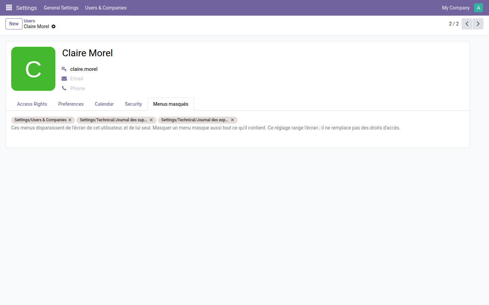
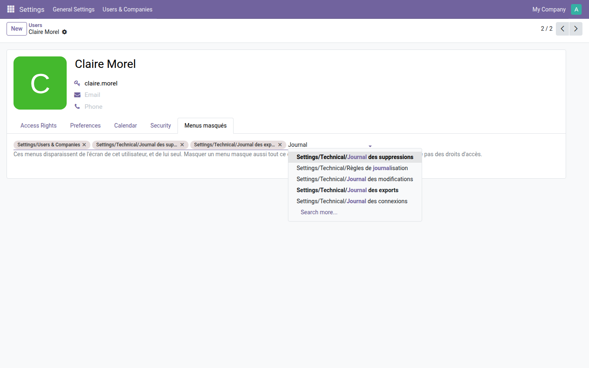

Remove menus from one specific user's screen, without creating a group or touching access rights.
A user only needs part of what their role opens up to them. The usual answer is to invent a group for every exception: the access-rights matrix swells, nobody knows any more what each group carries, and the slightest update becomes risky. For mere screen clutter, that is a disproportionate price.
Three menus removed for Claire Morel: two technical logs and the "Users & Companies" section. The full path is shown, so that no namesake can cause confusion.

Typing a word is enough: the list suggests the matching menus with their tree, from the root down to the entry.

Good to know: this module tidies the screen, it does not lock the data. A hidden menu remains reachable through its direct URL. To really forbid access, you need access rights: the OdooSkills range includes about fifteen partitioning modules — by sales team, by department, by project, by accounting journal, by warehouse. Full catalog: apps.odooskills.com.
LGPL-3 license — compatible with Odoo 19.0 Community and Enterprise. Support: apps@odooskills.com.